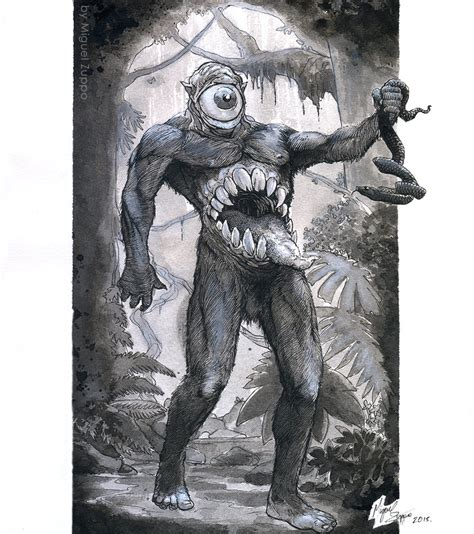

The mapinguari (“roaring animal” or “fetid beast”) is basically the bigfoot of South America. This cryptid is described as a giant smelly beast that can stand on its feet like a grizzly, having the face of a monkey and thick fur over skin tough enough to stop a shotgun round in its tracks. Some sources have reported it sporting a second mouth in the middle of its belly, which emits a disgusting odor that leaves men dizzy, confused, and unconscious. Often, people say the mapinguari serves as a sort of jungle protector, attacking those who take more resources than necessary. In this sense, it is similar to other legendary protector/punisher figures, like the boitatá above and the curupira, a creature with backward feet who finds joy in confusing hunters.
Some believe the mapinguari is really a giant ground sloth (Megatherium), thought to have gone extinct long ago but possibly still in endangered existence deep in remote parts of the rainforest. There are accounts of this sort of creature that span tribal groups who have no contact with each other, and many similar stories from hunters, rubber tappers, and more. The ubiquity and consistency of these reports piqued the interest of some scientists. One, an ornithologist named Dr. David Oren, has arranged expeditions to search for the mapinguari, but so far has collected zero sightings and a bunch of hair and feces that turned out to be non-mapinguari. One member of the Machiguenga tribe in Peru told another scientist, Dr. Glenn Shepard, that he had seen a mapinguari in a museum in Lima. That museum just so happens to include a display featuring a model of Megatherium.